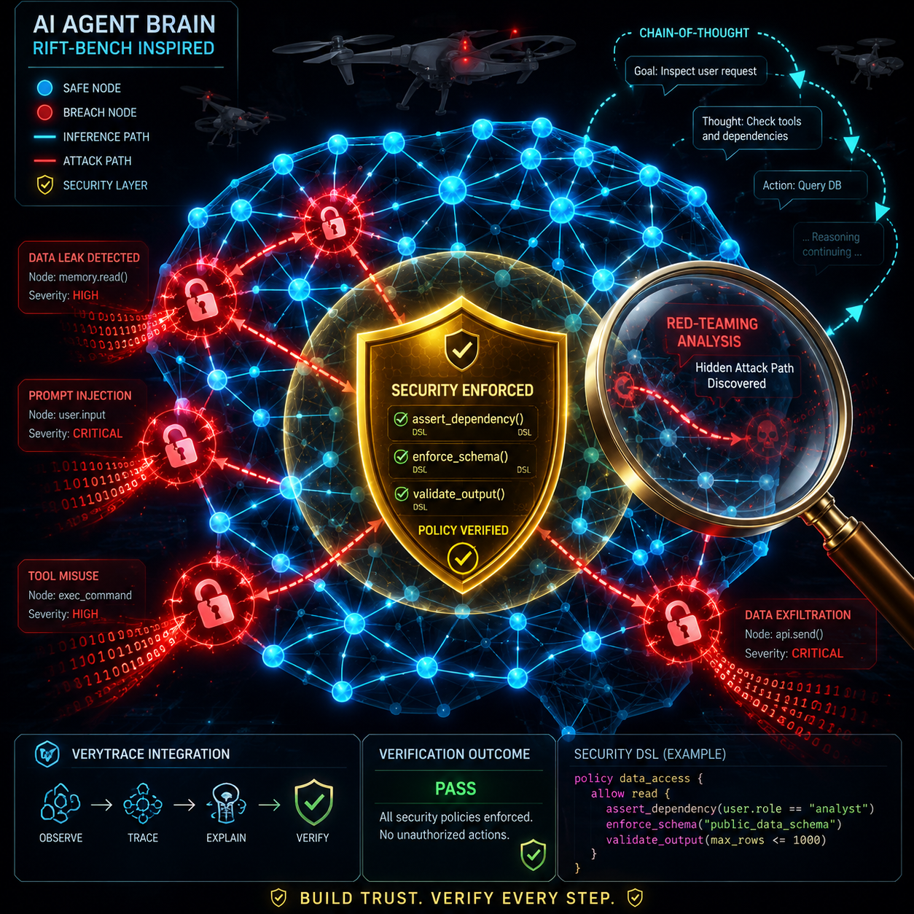

You built an agent. It calls APIs, writes files, and makes decisions while you sleep. But you have never proven it cannot be hacked. That is not confidence. That is blindness.
If you are building AI agents in production, this article is for you. Two new frameworks treat agent security as a systems engineering problem, not a prompt engineering one. RIFT-Bench maps your agent's attack surface as a graph. VeryTrace formalizes its reasoning into compilable logic. Together they give you something no prompt template can: proof.
Wrong Mental Models to Kill First
Red-teaming an agent is not red-teaming an LLM. LLM red-teaming asks: will it say something bad? Agent red-teaming asks: can an attacker chain three tool calls into data exfiltration? Different question. Different answer. Different methodology.
Most developers run a few jailbreak prompts and call their agent secure. That is like checking if your car's radio works and assuming the brakes are fine.
The Analogy That Sticks
Think of your agent as a drone. LLM red-teaming checks if the camera works. Agent red-teaming checks if someone can hijack the flight controls, reroute the GPS, and land it in enemy territory. You need both. Most people only have the camera test. And they are flying blind.
How It Works: Three New Frameworks
RIFT-Bench (arXiv:2606.23927, June 2026)
Yarin Yerushalmi Levi, Roy Betser, Amit Giloni, and their team at RIFT-Bench introduced a graph-based methodology for dynamic red-teaming of agentic AI systems. It operates in two automated phases. Discovery extracts your agent's system structure as a graph. Scanning deploys adaptive adversarial attacks across that graph and produces a comprehensive evaluation report.
What this means for you: instead of guessing which attack vectors matter, you see every possible path an attacker could take.

The framework was tested across 45 agentic systems spanning diverse implementations and attack vectors. It generalizes to heterogeneous architectures and supports direct evaluation of mitigation strategies. This is scalable security evaluation, not a one-time audit.
The paper is available on arXiv now. The authors have not yet released a public API, but the methodology is documented well enough that you can implement the Discovery phase against your own agent's architecture. The graph alone is worth more than every prompt template you have ever written. You cannot defend what you cannot see.
Quick Attack Surface Checklist:
- Are all tool inputs validated against a strict schema?
- Is the agent sandboxed from core system directories?
- Do API calls require least-privilege, scoped tokens?
VeryTrace (arXiv:2606.24124, June 2026)
Ninghan Zhong, Ahmet Ege Tanriverdi, Kaan Kale, and Sriram Vishwanath built VeryTrace, a zero-shot verification-and-repair framework that formalizes natural-language reasoning traces into a structured, compilable representation using a Domain-Specific Language. The DSL makes step dependencies explicit. It mechanizes quantitative content as executable expressions. It structures semantic inferences via deduction schemas.
What this means for you: Chain-of-Thought reasoning is fragile. Early errors silently propagate into confident but wrong conclusions. VeryTrace catches those errors before they compound. A hybrid verifier combines deterministic checks for computational correctness with targeted LLM audits for non-mechanizable semantic judgments.
For example, a compiled reasoning step in a DSL format might look like this:
verify_step(action="write_file", path="/usr/local/bin")
assert_dependency(prior_step="auth_check", status="passed")
enforce_schema(output_format="json")Tested across competition mathematics (AIME 2025), robotics planning (LLM-BabyBench), and kinship reasoning (CLUTRR), VeryTrace improved accuracy over zero-shot baselines without domain-specific training. Accepted at the LM4Plan Workshop @ ICML 2026. This fixes the fundamental fragility of Chain-of-Thought where early errors silently propagate into confident but wrong conclusions.
Execlave (Show HN, June 2026)
Execlave is an AI Agent Management Platform focused on governance, compliance, and enforcement for enterprise agent deployments. It provides audit trails, policy enforcement, access controls, and monitoring specifically designed for agentic AI systems. The AMP category is itself notable. It suggests the agent ecosystem is maturing beyond frameworks into management layers. You do not manage a production database without monitoring. Why would you manage an agent without it?
Before and After: What Changes
Before RIFT-Bench, you ran a few jailbreak prompts and called it secure. After RIFT-Bench, you have a graph of every attack path your agent exposes, with adaptive probes that evolve as your agent changes.
Before VeryTrace, you trusted Chain-of-Thought because it sounded reasonable. After VeryTrace, you compile the reasoning into executable logic and catch the errors before they compound.
Before Execlave, you deployed agents with no governance. After Execlave, you have audit trails that satisfy compliance and incident response.
Real-World Signals and Sovereign Stacks
NVIDIA's Agent Toolkit now includes OpenShell secure runtime. Not a coincidence. The same week RIFT-Bench drops on arXiv, NVIDIA ships a secure runtime for enterprise agents.
But this is not just for enterprise clouds. If you are building a Sovereign Stack with a local agent daily driver using Gemma 4 or DeepSeek-V4 Pro, these verification frameworks are just as critical for your self-hosted infrastructure. Whether you are running on a local RTX GPU or an enterprise cluster, the industry is converging on this simultaneously. When both academia and the largest chip company agree on a problem, the problem is real.
Addressing the Objections
"But my agent is simple." Simple agents use simple tools. Simple tools have simple vulnerabilities. A file-write agent with no sandbox is a ransomware deployment waiting to happen. Complexity is not the prerequisite for attack. Tool access is.
"But this adds overhead." So does encryption. So does testing. You do not skip those because they take time. You skip them because you have not been burned yet. That is not strategy. That is luck.
The Quick Win
Read the RIFT-Bench paper (arXiv:2606.23927) and map your agent's architecture against the Discovery methodology described there. You will see your agent's attack surface in a new light. You cannot defend what you cannot see.
The Escalation Path
Phase 1: Read RIFT-Bench and map your agent's attack surface against the Discovery methodology.
Phase 2: Apply VeryTrace to your agent's Chain-of-Thought reasoning paths. Formalize the critical ones into compilable logic.
Phase 3: Deploy Execlave governance layers for audit trails and policy enforcement.
Phase 4: Treat agent security like CI/CD. Automated. Continuous. Non-negotiable.
The Close
You built the agent. Now prove it cannot be turned against you. The frameworks exist. The methodology is documented. The only missing piece is your decision to treat agent security as a systems engineering problem instead of a prompt engineering afterthought. Start today.
Get More Articles Like This
Getting your AI agent setup right is just the start. I'm documenting every mistake, fix, and lesson learned as I build PhantomByte.
Subscribe to receive updates when we publish new content. No spam, just real lessons from the trenches.
Build Real AI Infrastructure
PhantomByte teaches you to build real AI infrastructure yourself: local AI stacks, autonomous agents, multi-agent orchestration, web scraping, and custom tools. Step-by-step PDF tutorials you download, follow, and deploy. No subscriptions. No fluff. Just skills that ship.